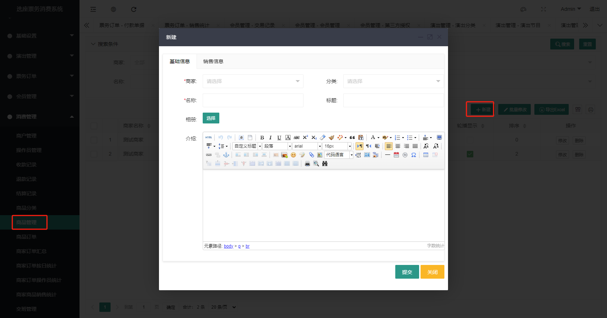

Merchant Retail Cashier
Smart Ticketing System We provide a simple merchant retail cashier function. Before using it, you need to create merchants, add operators and products in the management background. Please read this article for detailed use.
Due to version updates, there will be slight differences in the page display, which will not affect the use of the function
1. Merchant Management
1.1. Create a merchant
In the management background, click Merchant Management under Consumption Management, click New, fill in the merchant information, and click OK.

1.2. Add operator
In the management background, click Operator Management under Consumption Management, click New, fill in the operator information, and click OK.

2. Product Management
2.1. Add product category
In the management background, click Product Category under Consumption Management, click New, fill in the product information, and click OK.
2.2. Add product
In the management background, click Product Management under Consumption Management, click New, and fill in the product information.  In the sales information tab, fill in the sales information, click Add before the specification SKU list to add sales specifications for the product, and click OK after filling in.
3. Cashier
After the above steps are completed, you can start using the cashier. Please contact Smart Ticketing System customer service to obtain the cashier program.
3.1. Open the cashier
After installation, double-click the program icon to open the program. Before you start using it, you must set the server URL. Click the Settings icon in the upper right corner, fill in the server URL, and click OK.

3.2. Log in to the cashier
After setting, enter the operator account and password on the cashier homepage, and click Login. For your convenience, you can check Remember Me, so you don’t have to enter your account information the next time you log in.

3.3. Main page operation of the cashier
 After clicking the View/Add to Cart button, the product information will pop up. Select the specification to be purchased, fill in the remarks, and then you can add it to the cart.
After clicking the View/Add to Cart button, the product information will pop up. Select the specification to be purchased, fill in the remarks, and then you can add it to the cart.
 After selecting the products, there are two payment methods, Scan Code Payment and Cash Payment. Scan code payment requires scanning the user's payment code with a code scanner. For cash payment, directly click the Cash Payment button. After payment, click Finish.
After selecting the products, there are two payment methods, Scan Code Payment and Cash Payment. Scan code payment requires scanning the user's payment code with a code scanner. For cash payment, directly click the Cash Payment button. After payment, click Finish.
 After the ticket is sold, the system will automatically print a small ticket. The selection and setting of the printer can be set by clicking the gear button in the upper right corner.
After the ticket is sold, the system will automatically print a small ticket. The selection and setting of the printer can be set by clicking the gear button in the upper right corner.

3.4. Sales records
Click the Sales Records icon button in the upper right corner
to enter the sales records page, where you can view the sales records, click the Print button to reprint; click the Refund button to cancel the order.

3.5. Shift handover and exit
Click the Close button in the upper left corner, and the system will prompt whether to close the software. After clicking OK, the system will prompt whether to print the shift handover sheet. If you need to print it, click the Print button, and the system will automatically exit; if you do not print it, other operators cannot log in and use the software.

4. Statistical reports
Related statistical reports can be viewed in the background of the smart ticketing system, including sales statistics, product statistics, order statistics, etc. I will not go into details here. For details, please log in to the background system to view.

The above is the instruction for the merchant cashier subsystem. I wish you a happy use and a prosperous business.